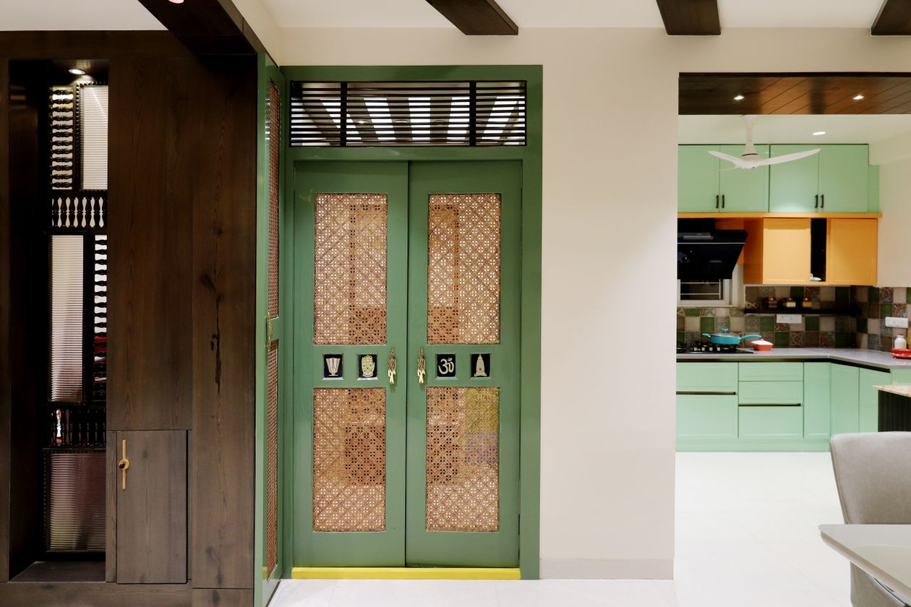

HSR Layout, Bengaluru — a resale flat
Plan 2BHK · 1,150 sq ftFacing EastEntrance Pada 2 — as first measuredDemolition NoneFee ₹4,500
- The ask
- A family had bought the flat and been told by another consultant that the main door stood in the wrong pada and the entrance wall would have to be broken and rebuilt — a builder's quote followed, as it usually does.
- What the reading did
- Measured the plot's frontage from the street side, as the rule is written. The first measurement had been taken along the corridor wall inside the building, which is not the frontage at all. Measured where the rule says to measure, the door stood in pada 4 — inside the favourable padas for an east frontage. The rest of the plan read clean: kitchen south-east, pooja east.
- The outcome
- No wall was touched. The report ran to two pages, most of it the measurement shown step by step so the family could check it themselves with a tape.
“She measured twice and told us to spend nothing. The first consultant had measured along the wrong wall — and his remedy was a new one.”
R. Chandran, HSR Layout — on this reading